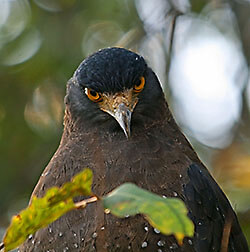

Inspirational Safaris in India & Africa
Inspirational Safaris in India & Africa

This is a list of the bird species recorded in India. The avifauna of India includes around 1301 species of which 42 are endemic, 1 has been introduced by humans and 26 are rare or accidental. One species has been extirpated in India and 82 species are globally threatened. The Indian Peacock (Pavo cristatus) is the national bird of India.
More recent birds discovered in India include the Bugun liocichla which was discovered in Arunachal Pradesh in 2006. Besides this, a few birds are considered to be extinct which have been rediscovered as an example being the Jerdon's Courser. Some others have been elevated from subspecies to full species.
This list's taxonomic treatment (designation and sequence of orders, families and species) and nomenclature (common and scientific names) are based on Clement's 5th edition but include more recent revisions. The family accounts at the beginning of each heading reflect this taxonomy, as do the species counts found in each family account.
The following tags have been used to highlight certain relevant categories. It must be noted that not all species fall into one of these categories. Those that do not, are commonly occurring native species.
Nicobar Scrubfowl r Megapodius nicobariensis
Family: Accipitridae